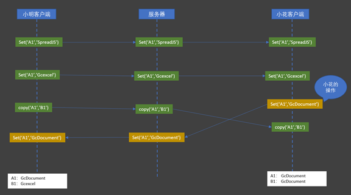

原文连接:https://www.cnblogs.com/powertoolsteam/p/onlineexcel.html
本文由葡萄城技术团队原创并首发
转载请注明出处：葡萄城官网，葡萄城为开发者提供专业的开发工具、解决方案和服务，赋能开发者。
Excel是我们办公中常用的工具 ，它几乎能为我们处理大部分数据，友好的交互界面、丰富的公式函数和易于上手的图表为我们在数据统计方面提供了不小的帮助，但经过一段时期运行，就会出现下面的情况：
这样多分枝的混乱状况就会难以保证文档的安全性及权威性。
于是聪明的小伙伴想到了一个解决方案，共享出一份Excel文档，根据人员的职级不同，设置仅可只读和编辑的权限，同时根据为不同人制定不同规则，例如：张某每天十点编辑，王某每天十一点编辑的方式来解决冲突的问题。这种方式很聪明，从流程上解决了多副本的问题，但不能同时编辑的问题依然没有被解决，如果一个部门的人足够多，这样分时的策略可能需要花一天时间才能完成一份Excel的编辑。
所以多人协作在线文档的需求也变得越发变得强烈，因为在日常工作中，与团队的其他人进行文档协作是一种再常见不过的工作方式。由于工作分工、工作进展的不同，团队内部的信息往往需要及时同步，然而伴随着团队经营规模的不断扩大，在线协同、多人协作，以及软件项目管理等问题将会接踵而至，成为制约企业高效发展的瓶颈。
而这些问题，通常表现为：
- 跨部门、地区沟通协作的不便
- 过度依赖文件、文件夹共享的形式，不能确保文档的安全性
- 没法纪录和体现职工对文本文档的意见和评价
- 文档记录发生变更时，无法及时通知到相关部门和员工
- 文档无法在线协同编辑，缺失必要的流程管控
- 多人共同编辑一个文档，无法留存修改记录和历史版本
针对上述问题，现在在市面上，已经有了很多这类多人协作的工具，例如：国外的Google Docs、Office365，及国内的腾讯文档、石墨文档、有道云协作等。
因为这篇文章我们的目的是想向大家从企业IT管理者的角度出发深入研究协同办公系统的形式、基础和难点等实现原理，所以成品软件我们在这不做过多赘述。那我们正式开始吧。
多人协作的形式：历史与发展
多人协作的历史十分悠久，起源于静态的多人协作模式，即每个人先完成自己的工作，然后再进行汇总。
多人协作的初期：静态协作
- 递增式协作
- 邮件：你来我往
- 论坛：跟帖回复
- 独占式协作
- 文档传递
- 微软VSS
- 合并式协作
- SVN
- Git
- diff，patch，merge指令

常见的静态多人协作方式
多人协作的发展期：从静态到动态
- 静态协作的比喻
- 拼接画
- 积木
- 静态协作的特点
- 多版本
- 块操作
- 有协作动作
- 静态协作的缺点
- 版本碎片化
- 缺乏时效性
- 协作动作成本高
静态多人协作的成本，会随着加入人数和项目的复杂度呈几何级数的增长。因此，对于企业来说，急需一种无协作动作、唯一版本、版本可控的无协作成本模式，即动态多人协作模式。
多人协作的蓬勃期：动态
- 动态协作的比喻
- 一起画黑板
- 动态协作的特点
- 唯一版本
- 原子操作
- 无协作动作
- 动态协作的优点
- 版本可控
- 实时
- 无协作成本
- 典型产品
- Office Online
- 石墨
- OnlyOffice
多人协作的基础：原理与架构
任何信息，无论其是什么展现形式，如果要做到多人实时编辑与展现，只需要实现以下三步而已：
- 操作化
- 可传输
- 可还原
举例说明多人协作的实现方式
操作化
操作化，指任何信息都可以转换为一组操作的集合。很容易理解，但它仍有不少值得思考的点：
- 分割与组合
- 如何保证：信息的所有变化都可以分解为操作的集合？反之，操作如何覆盖出信息的所有变化？
- 分割的颗粒度如何决定？
- 粗一点？
- 细一点？
- 如何兼顾解释性与扩展性？
- 绝对操作与相对操作
- 绝对操作
- 针孔打印机的完美世界
- 打印机时代的编辑噩梦
- 相对操作
- 4K电视不是梦
- 为什么数字电视稳定性不如模拟电视
- 绝对操作
- 绝对操作与相对操作比喻：时间与空间的互换
可传输
可传输，就是指操作有办法通过网络传输给其他终端。实现动态多人协作，需要考虑以下几点：
- 传输内容
- 原始文本
- 清晰
- 冗余
- 压缩技术
- 逻辑压缩
- 协议压缩
- 手动压缩
- 原始文本
- 网络协议
- Socket
- TCP
- UDP
- HTTP
- WebSocket
- Socket
- QoS（Quality of Service，服务质量）
-
快速失败
-
自动回滚
-
自动重连
- 自动恢复
-
可还原
可还原，就是指接收到来自网络的操作消息后，可以在本地完全一致地再次执行该操作。可还原包括了：
- 绝对操作的还原
- 控制体积
- 合理的提示
- 相对操作的还原
- 严格的顺序性
- 从源头保障顺序性
- 顺序性的补救
- 本地操作的还原
- 过滤收到的操作集合
- 从源头细化操作颗粒
- 本地保存本地执行
- 无入侵的还原
- 定义入侵
- 排除入侵
- 千人千面
多人协作的难点：乱序与冲突
乱序
乱序的表现形式如下图，小明在客户端执行了一系列操作，传递到服务器时发生乱序，导致小花看到了截然不同的信息：
为了解决乱序问题，可以尝试以下方法：
1. 用性能换取顺序正确——基于协议
2. 用性能换取顺序正确——基于回执
两种方法的优缺点
- 基于协议
- 优点
- 可靠，历经考验
- 简单，无需开发
- 缺点
- 资源开销高
- 必须整套使用
- 优点
- 自主可控，按需开发
- 资源开销可控
- 缺点
- 需要自己投入开发
- 应用层逻辑控制使得网络复杂度向外蔓延
- 复杂度带来维护成本
- 基于回执
基于乱序处理方法的总结
网络不是绝对可靠的，为了实现相对可靠，需要付出一定的代价，企业需要考虑的是：如何衡量所付出的代价与产出成正比。
冲突
比乱序更高级的一种表现形式，存在多向、多维度等问题。

如何避免错误的蔓延？
原则：任何一次不一致，都会导致后续的操作基于错误的信息进行，从而不断扩大错误，造成无法收拾的结果。因此，不一致是不能被容忍的。
解决办法：
- 严格一致性：独占
- 最终一致性：检查与修复
- 非技术手段：设计与提示
严格的一致性
独占就是同一时间同一范围只能由一人操作。
- 范围
- 整个表格，类似VSS
- 工作表
- 单元格范围
- 排他性
- 独占冲突时，必有一方被弹开
- 直到占有者解开，不然无法占用
- 占用前无法操作
- 原理和锁基本一致
- 优点
- 可以确保严格一致性，不会产生多版本的错误累积
- 比起修复恢复这类弥补手段，一开始就不出错的成本最低
- 逻辑清楚简单，开发维护成本低
- 缺点
- 静态协作的味道
- 独占动作严重影响体验
- 大幅降低协作效率
- 需对表格实现的 功能
- 锁定工作表
- 锁定单元格
最终一致性
基于唯一正确顺序，察觉客户端的错误，撤销错误操作后重新执行正确的操作。
- 唯一正确
- 服务器到达顺序
- 协作边界分流
- P2P+选举算法
- 察觉错误
- 服务器回执id
- 服务器回执操作，MS
- 撤销错误
- 撤销到错误发生前的一步操作的结果
- 保存副本实现撤销功能
- 利用操作版本快照
- 重新执行
- 操作队列需保存
- 区分好无感知执行与显式执行
针对多人协作难点的总结
如何实现Excel相关功能是需要开发人员需要花时间去研究的，另外为了满足需求，适配多设备和平台的兼容性也非常重要。
另外，多人协作表格的本质还具有如下本质和特点：
- Server – Clients 中心系统，类似数值敏感的小型网游
- 任何这类系统都是在体验和正确性中寻求平衡
- 表格的数值敏感性高于网游，数据操作和存储的挑战更大
- 表格的计算复杂度更高，尤其涉及复杂公式嵌套与全量统计筛选
- Web存在天花板，所以复杂的页游并不多见，端游较多
最后，假如您想了解更多如何实现多人协作平台相关的内容，欢迎参加2019年12月18日（周三） 14点由上海佳软CTO带来的一场线上直播：https://live.vhall.com/483759540，相信届时我们都会受益良多的。